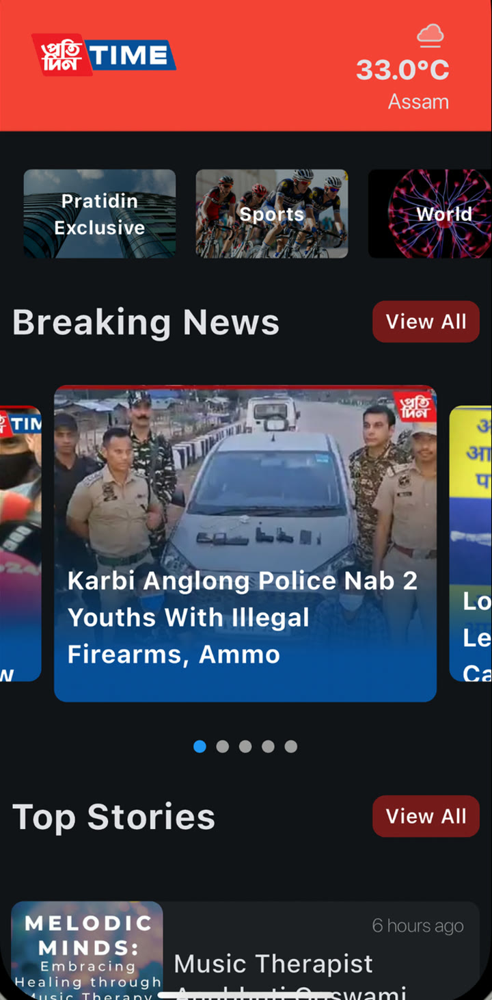
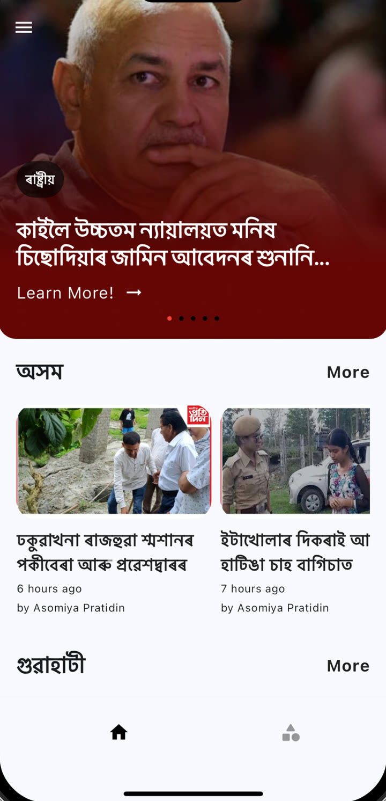
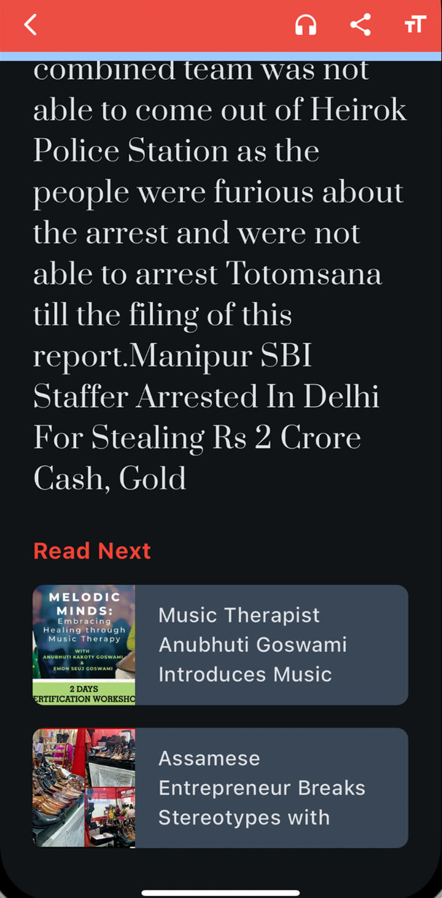
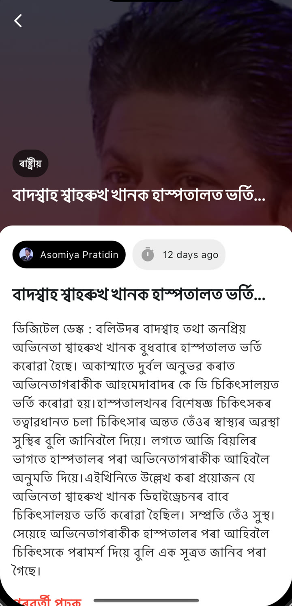
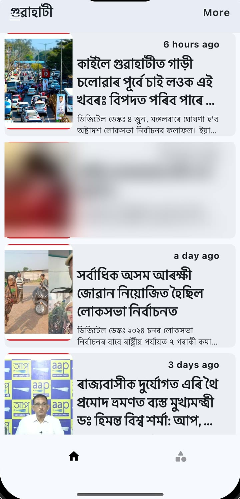
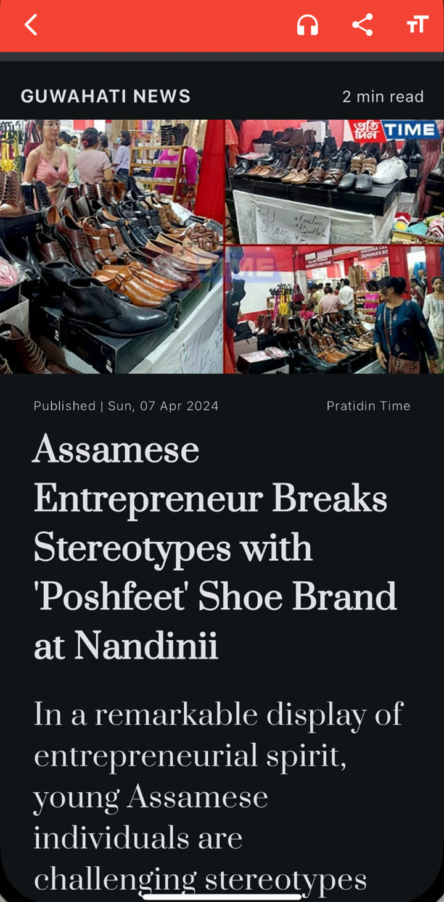
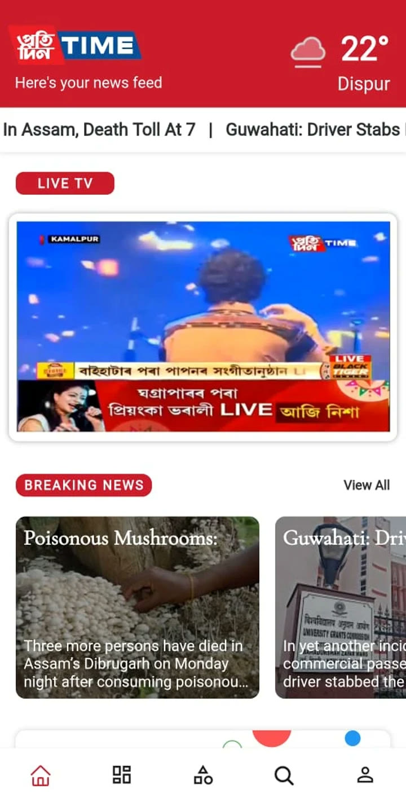
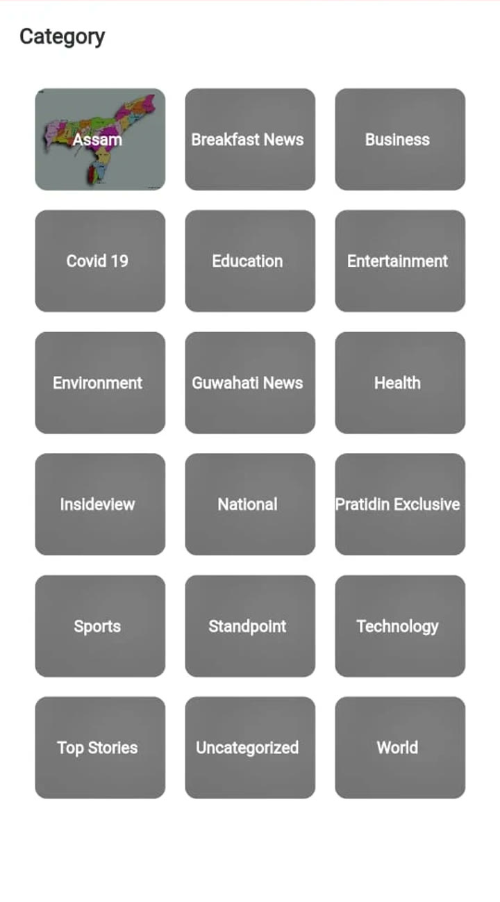
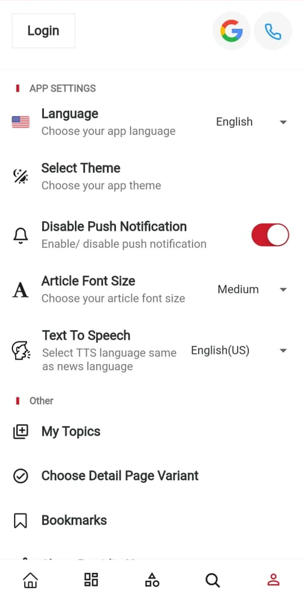
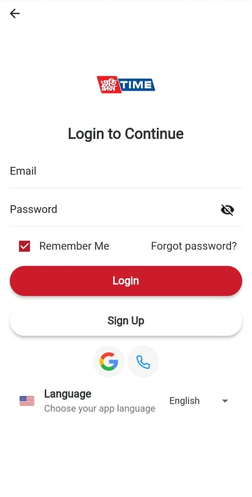

Case study 06 · News apps
Asomiya Pratidin & Pratidin Time
Two Android news apps for two newsrooms, built in Flutter.



- Apps
- 2 published
- Platform
- Flutter · Android
- Content
- RSS feeds
- Services
- Firebase
The build
Asomiya Pratidin and Pratidin Time each have their own Android app on Google Play. I built both in Flutter. The apps pull stories from the newsrooms' RSS feeds and use Firebase.
Asomiya Pratidin serves readers in Assamese; Pratidin Time publishes in English and has been through two interfaces, the first release and a full redesign. All three are shown below.
Asomiya Pratidin
An Assamese-language reader: big imagery for the top stories, sections laid out like the paper, and long-form text set for comfortable reading in Assamese script.
-
Home
A swipeable carousel of top stories with their section label, followed by section rows such as Assam and Guwahati, each with a More link.
-

Article
A full-bleed lead image and headline, then the source and how long ago it was published, the story text and what to read next.
-

Sections
Each section lists its stories with a thumbnail, headline, opening lines and a relative timestamp.
Pratidin Time, redesigned
A rebuilt interface around reading: a dark theme, image-led navigation, and an article view tuned for long reads.
-
Home
Weather in the header, photo tiles for sections like Pratidin Exclusive, Sports and World, a swipeable Breaking News carousel and Top Stories with timestamps.
-

Article
Section label and reading time, a lead image, publish date and source, then a large serif headline and body.
-
Read on
Listen, share and text-size controls stay in the toolbar, and Read Next suggests the following story.
Pratidin Time, first version
The original Pratidin Time app: live coverage up front, every section one tap away, and settings that let readers make the app their own.
-

Home
A scrolling headline ticker, local weather, the Live TV stream and a Breaking News carousel.
-

Categories
Every desk in a grid, from Assam and Guwahati News to National, World, Business, Sports and Technology.
-

Make it yours
App language, theme, article font size, text-to-speech, push notifications on or off, followed topics and bookmarks.
-

Accounts
Sign in with email and password, Google or a phone number, with language choice right on the login screen.
Under the hood
Source
Newsroom RSS feedsAsomiya Pratidin · Pratidin TimeApp
FlutterHome, categories, articles, settingsFirebaseApp services
Back to the start